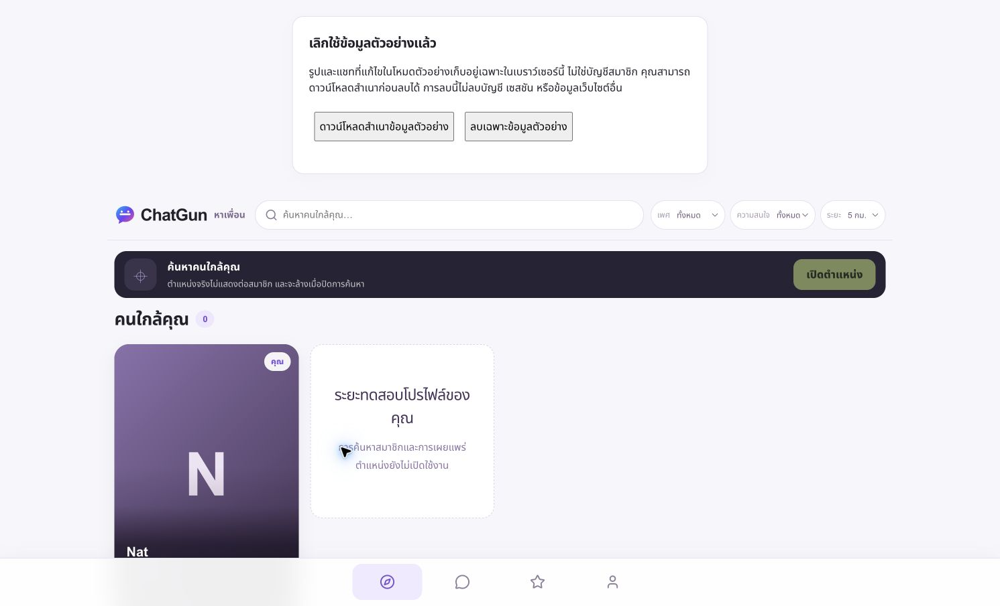

20 October 2026 · Asia/Bangkok · Production
Actual deployed SHA: 815c2c401e095bb2dc3e6a1a2497269f4f268fb6. This supersedes the earlier report's human-E2E BLOCKED status; earlier evidence remains historical.
| Test | Result |
|---|---|
| Invitation consumed exactly once | PASS |
| Genuine LINE OAuth / same-account re-login | PASS — human interaction and persistent guarded account path; individual historical token/nonce/PKCE exchanges not independently captured |
| Valid session created | PASS — genuine authenticated application, persisted sessions and refresh |
| Approved policy acceptance and age declaration | PASS — exact approved versions; self-declaration, not independent age verification |
| Real owner record / LINE identity linked | PASS — one invitation-correlated account and one LINE identity |
| Profile onboarding completed / refresh | PASS — active enrollment/account and saved profile; hidden onboarding |
| Logout invalidates current session | PASS — live protected app denial and one revoked session; other existing device sessions preserved |
| Genuine LINE re-login / no duplicate | PASS — same account, one user/identity/profile, no repeated acceptance |
| Public registration and later services disabled | PASS — live exact flags and private Production media binding |
| Owner UUID privately confirmed | PASS — owner confirmation only, no Admin grant |
| Actual old-token replay / historical cookie headers | NOT VERIFIED — no token extracted or replayed; handler/source regressions cover controls |
| Real account deletion / additional identity linking | NOT RUN — no deletion consent or separate identity; owner data preserved |
Exactly one genuine user, LINE identity, profile, invitation and enrollment. 2 unrevoked sessions, 1 revoked; 3 total session records. No duplicate provider subjects and no foreign-key violations. No social messages, media or roles. Bio/interests empty by owner choice; profile is valid and active. No precise location stored, Discovery hidden, Online default off. No new invitation, fabricated identity, account deletion, data reset, schema change or Admin grant.
Sanitized D1 verification · Human/browser evidence and limitations. Actual internal UUID, subject, token, invitation and cookie values are excluded. The owner privately confirmed the correlated account; Admin remains a separate explicit action.
The real own-profile Gallery fetched successfully but then unconditionally requested the Chat-based album-access queue. With Messaging deliberately disabled, that endpoint returned feature_disabled; the UI incorrectly displayed a Gallery failure and disabled the album icon. The frontend now fetches that queue only when Messaging is enabled. Backend authorization and service gates are unchanged. Regression tests cover own-profile entry and absence of that prohibited request at 390,768,1440px.
168 unit/integration/security PASS; 13 local Chromium PASS; 14 isolated Preview checks PASS; 22 Production checks PASS; all 36 manifest HTML/JS/CSS hashes verified. CI PASS on deployed SHA. No blocked manual cases counted as passes.
LINE functional E2E PASS is not a claim that a historical provider transcript was captured: the authorization code, PKCE verifier, nonce, signed claims and runtime cookie headers were not extracted. Validated code performs exchange and provider token validation before account/session creation. Existing live record correlations and manual re-login support functional completion. Actual revoked-token replay, a second-provider linking test, real deletion and real Android/iPhone hardware are NOT RUN/NOT VERIFIED.
Public signup, Google/Facebook, Discovery, Messaging, Presence, media uploads, moderation tools, ratings, Sensitive content, OTP and demo remain disabled. Private Production R2 and original Preview bindings preserved. Legacy browser-only demo export/removal prompt is intentional and was not cleared; no fake profiles are displayed.
Assessment: owner-only login, acceptance, onboarding and session pilot PASS. Wider social/media Beta remains NO-GO. Next milestone: separately approve narrowly scoped Admin/moderation access after identity confirmation, then validate the operating procedures before any second participant or social/media wave. No automatic role assignment or new invitation.
Owner-only app after human re-login; no other members or generated activity.
